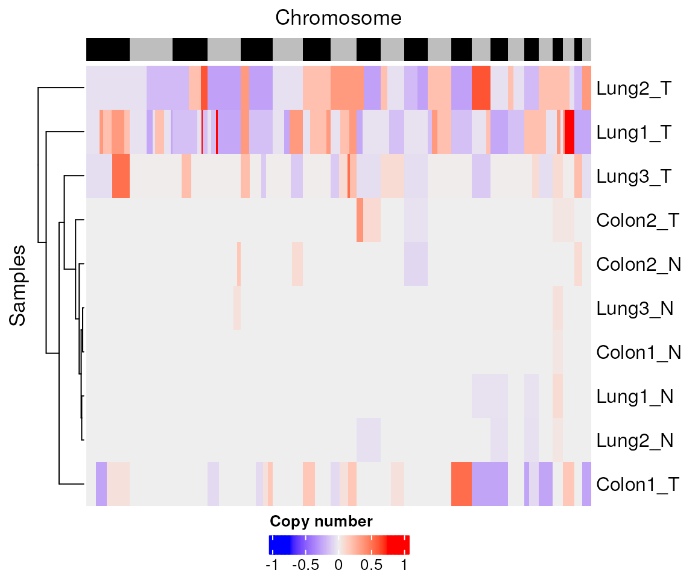

library(mesa)
#> Loading required package: qsea
#> Loading required package: dplyr
#>
#> Attaching package: 'dplyr'
#> The following objects are masked from 'package:stats':
#>
#> filter, lag
#> The following objects are masked from 'package:base':
#>
#> intersect, setdiff, setequal, union
#>
#> Attaching package: 'mesa'
#> The following object is masked from 'package:qsea':
#>
#> getPCAThis vignette is designed to introduction the mesa
package, which is designed to help analyse methylation enrichment
sequencing data. Methylation enrichment sequencing data is generated by
performing next-generation sequencing (NGS) on DNA which has been
enriched for those fragments of DNA which contain methylation on the
cytosine of CG dinucleotides. This may be, for example, via
immunoprecipitation (MeDIP-seq), or via a pulldown performed with a
protein in the methyl-binding-domain (MBD) family (MBD-seq).
Once this step has performed, the enriched set of DNA fragments is
then sequenced to generate FASTQ files. These should be aligned to a
reference genome and de-duplicated (this deduplication MUST be done, to
prevent PCR-duplicates from looking like a peak) to produce bam files
using standard alignment techniques. For details on how to generate the
qseaSet from bam files, go here: vignette("generation"). If
the enrichment step has worked correctly, there should be peaks of reads
present at regions of the genome where the DNA contained methylated CGs,
with minimal background reads elsewhere.
For the examples here, we will use a dataset consisting of 10
samples; 5 tumours and 5 matched adjacent normal samples. For size
reasons, this is only includes a small part of chromosome 7. As noted
above, for how to generate the qseaSet object see this vignette
vignette("generation").
First we will shorten the name of the example dataset to just be
qseaSet, and see what it contains. Throughout this vignette
we assume familiarity with the tidyverse
vignette("paper", package = "tidyverse"), and with the pipe
operator |> to chain commands together.
library(qsea)
qseaSet <- exampleTumourNormalAs the underlying structure to hold our methylation data we use the
qsea package. The tutorial vignette for qsea
is available here, but we will cover some of these concepts
here.
The qseaSet object contains a number of different pieces of information regarding the experiment, in one single object. If we evaluate it, we see some summary information. This includes the number of samples included, their names and how many windows are present.
qseaSet
#> qseaSet
#> =======================================
#> 10 Samples:
#> Colon1_N, Colon1_T, Colon2_N, Colon2_T, Lung1_N, Lung1_T, Lung2_N, Lung2_T, Lung3_N, Lung3_T
#> 819 Regions in 22 chromosomes of BSgenome.Hsapiens.NCBI.GRCh38The qseaSet contains multiple parts to it. The main ones to be aware of are:
We will go into some detail about each of these components now.
The sample table is the sample metadata (data about the data). This
is a data frame with one row for each sample in your qseaSet. It
MUST contain a column called sample_name, as this
is the primary identifier used in qsea, as well as a
group column which indicates replicate information to
collapse across (if present) for certain functions. Any other columns
can then be added onto this table, and it should contain any metadata to
describe the different samples contained within the qseaSet.
We access the sample table using the function
getSampleTable:
qseaSet |>
getSampleTable() |>
as_tibble()
#> # A tibble: 10 × 9
#> sample_name group patient type tumour tissue age gender stage
#> <chr> <chr> <chr> <chr> <chr> <chr> <dbl> <chr> <chr>
#> 1 Colon1_N Colon1_N Colon1 NormalColon Normal Colon 80 F NA
#> 2 Colon1_T Colon1_T Colon1 CRC Tumour Colon 80 F III
#> 3 Colon2_N Colon2_N Colon2 NormalColon Normal Colon 67 F NA
#> 4 Colon2_T Colon2_T Colon2 CRC Tumour Colon 67 F IV
#> 5 Lung1_N Lung1_N Lung1 NormalLung Normal Lung 64 F NA
#> 6 Lung1_T Lung1_T Lung1 LUAD Tumour Lung 64 F IIA
#> 7 Lung2_N Lung2_N Lung2 NormalLung Normal Lung 71 F NA
#> 8 Lung2_T Lung2_T Lung2 LUSC Tumour Lung 71 F IA
#> 9 Lung3_N Lung3_N Lung3 NormalLung Normal Lung 72 M NA
#> 10 Lung3_T Lung3_T Lung3 LUAD Tumour Lung 72 M IBWe can also get a vector of the samples present inside the qseaSet by
using getSampleNames:
qseaSet |>
getSampleNames()
#> [1] "Colon1_N" "Colon1_T" "Colon2_N" "Colon2_T" "Lung1_N" "Lung1_T"
#> [7] "Lung2_N" "Lung2_T" "Lung3_N" "Lung3_T"As the sample table is so important, mesa extends a number of
dplyr (tidyverse) functions that let you modify it. For
instance, if we want to add a new column to the sample table, we can use
mutate:
qseaSet |>
mutate(new_column = "New") |>
getSampleTable()
#> sample_name group patient type tumour tissue age gender
#> Colon1_N Colon1_N Colon1_N Colon1 NormalColon Normal Colon 80 F
#> Colon1_T Colon1_T Colon1_T Colon1 CRC Tumour Colon 80 F
#> Colon2_N Colon2_N Colon2_N Colon2 NormalColon Normal Colon 67 F
#> Colon2_T Colon2_T Colon2_T Colon2 CRC Tumour Colon 67 F
#> Lung1_N Lung1_N Lung1_N Lung1 NormalLung Normal Lung 64 F
#> Lung1_T Lung1_T Lung1_T Lung1 LUAD Tumour Lung 64 F
#> Lung2_N Lung2_N Lung2_N Lung2 NormalLung Normal Lung 71 F
#> Lung2_T Lung2_T Lung2_T Lung2 LUSC Tumour Lung 71 F
#> Lung3_N Lung3_N Lung3_N Lung3 NormalLung Normal Lung 72 M
#> Lung3_T Lung3_T Lung3_T Lung3 LUAD Tumour Lung 72 M
#> stage new_column
#> Colon1_N <NA> New
#> Colon1_T III New
#> Colon2_N <NA> New
#> Colon2_T IV New
#> Lung1_N <NA> New
#> Lung1_T IIA New
#> Lung2_N <NA> New
#> Lung2_T IA New
#> Lung3_N <NA> New
#> Lung3_T IB NewSometimes you have further information about some or all samples that
you want to include, at which point you can use left_join
to combine with a new data frame. Missing data is fine, and you can join
on a different column by using by.
tumourVAFdata <- tribble(~sample_name, ~VAF, #VAF = Variant Allele Frequency
"Colon1_T",23,
"Colon2_T",40,
"Lung1_T",15,
"Lung3_T",5)
qseaSet |>
left_join(tumourVAFdata, by = join_by(sample_name)) |>
getSampleTable() |>
dplyr::select(sample_name, VAF)
#> sample_name VAF
#> Colon1_N Colon1_N NA
#> Colon1_T Colon1_T 23
#> Colon2_N Colon2_N NA
#> Colon2_T Colon2_T 40
#> Lung1_N Lung1_N NA
#> Lung1_T Lung1_T 15
#> Lung2_N Lung2_N NA
#> Lung2_T Lung2_T NA
#> Lung3_N Lung3_N NA
#> Lung3_T Lung3_T 5We can filter the samples present in the qseaSet by using the
filter function. This takes the sample table, filters using
the logical criteria given, and returns a qseaSet with (potentially)
fewer samples. All the subcomponents of the qseaSet are reduced
appropriately behind the scenes.
qseaSet |>
filter(tumour == "Tumour")
#> qseaSet
#> =======================================
#> 5 Samples:
#> Colon1_T, Colon2_T, Lung1_T, Lung2_T, Lung3_T
#> 819 Regions in 22 chromosomes of BSgenome.Hsapiens.NCBI.GRCh38There are also functions for sorting the names of the qseaSet:
sort and arrange are implemented:
qseaSet |>
arrange(tumour)
#> qseaSet
#> =======================================
#> 10 Samples:
#> Colon1_N, Colon2_N, Lung1_N, Lung2_N, Lung3_N, Colon1_T, Colon2_T, Lung1_T, Lung2_T, Lung3_T
#> 819 Regions in 22 chromosomes of BSgenome.Hsapiens.NCBI.GRCh38We can also alter columns of the sample table via the
select function from dplyr. This may be used
in both positive or negative selection modes. Note that select will
always retain the columns sample_name and
group in the output, as they are required for a valid
qseaSet.
qseaSet |>
dplyr::select(tumour) |>
getSampleTable()
#> sample_name group tumour
#> Colon1_N Colon1_N Colon1_N Normal
#> Colon1_T Colon1_T Colon1_T Tumour
#> Colon2_N Colon2_N Colon2_N Normal
#> Colon2_T Colon2_T Colon2_T Tumour
#> Lung1_N Lung1_N Lung1_N Normal
#> Lung1_T Lung1_T Lung1_T Tumour
#> Lung2_N Lung2_N Lung2_N Normal
#> Lung2_T Lung2_T Lung2_T Tumour
#> Lung3_N Lung3_N Lung3_N Normal
#> Lung3_T Lung3_T Lung3_T Tumour
qseaSet |>
dplyr::select(-tumour) |>
getSampleTable()
#> sample_name group patient type tissue age gender stage
#> Colon1_N Colon1_N Colon1_N Colon1 NormalColon Colon 80 F <NA>
#> Colon1_T Colon1_T Colon1_T Colon1 CRC Colon 80 F III
#> Colon2_N Colon2_N Colon2_N Colon2 NormalColon Colon 67 F <NA>
#> Colon2_T Colon2_T Colon2_T Colon2 CRC Colon 67 F IV
#> Lung1_N Lung1_N Lung1_N Lung1 NormalLung Lung 64 F <NA>
#> Lung1_T Lung1_T Lung1_T Lung1 LUAD Lung 64 F IIA
#> Lung2_N Lung2_N Lung2_N Lung2 NormalLung Lung 71 F <NA>
#> Lung2_T Lung2_T Lung2_T Lung2 LUSC Lung 71 F IA
#> Lung3_N Lung3_N Lung3_N Lung3 NormalLung Lung 72 M <NA>
#> Lung3_T Lung3_T Lung3_T Lung3 LUAD Lung 72 M IBNote as usual in R, all of these functions won’t change the original object, and need to be assigned to a new variable (or the same variable).
The counts matrix holds how many fragments of DNA (which may be a single read or a paired read) were assigned to each window when the qsea object was built. Note that qsea uses the centre of the fragment to assign the window. This counts matrix should not generally be used directly (we will cover how to make tables of data later), but you can access via:
qseaSet |>
getCounts() |>
head()
#> Colon1_N Colon1_T Colon2_N Colon2_T Lung1_N Lung1_T Lung2_N Lung2_T
#> [1,] 0 1 1 1 1 1 0 0
#> [2,] 1 0 0 0 0 0 0 0
#> [3,] 0 0 0 1 1 0 0 0
#> [4,] 0 1 0 1 1 0 1 1
#> [5,] 0 0 18 14 20 9 21 13
#> [6,] 0 4 11 18 11 3 20 8
#> Lung3_N Lung3_T
#> [1,] 2 0
#> [2,] 3 8
#> [3,] 0 1
#> [4,] 0 1
#> [5,] 12 6
#> [6,] 7 9Note that this object does not have any information as to where each
window is located. That information is all kept inside the regions slot
(see below). The separate vignette vignette("data-and-qc")
details how to access tables of data. ## Windows The regions object is a
GenomicRanges (GRanges) object, representing the genomic windows that
the qseaSet covers. This is similar to a data frame, but with additional
information attached to it. In this the chromosomes are represented by
the seqnames column, and the start-stop positions are part
of the ranges column. We would highly recommend the use of
the plyranges package to work with GRanges objects, see
vignette("an-introduction", package = "plyranges").
For DNA methylation this also contains a column called
CpG_density, which is a normalised value representing how
many CG dinucleotides were present in the reference genome for that
window. For methylation enrichment sequencing, regions with several
methylated CG dinucleotides are more likely to be successfully pulled
down than isolated methylated CGs, so there is a bias towards CG dense
regions. This bias is more present when using a MBD protein for the
enrichment step, rather than immunoprecipitation.
qseaSet |>
getWindows()
#> GRanges object with 819 ranges and 1 metadata column:
#> seqnames ranges strand | CpG_density
#> <Rle> <IRanges> <Rle> | <numeric>
#> [1] 7 25002001-25002300 * | 5.50911
#> [2] 7 25005001-25005300 * | 13.40796
#> [3] 7 25008601-25008900 * | 5.56726
#> [4] 7 25011301-25011600 * | 5.10095
#> [5] 7 25017601-25017900 * | 8.38014
#> ... ... ... ... . ...
#> [815] 7 27982201-27982500 * | 7.72450
#> [816] 7 27986701-27987000 * | 10.03481
#> [817] 7 27987001-27987300 * | 12.74275
#> [818] 7 27987301-27987600 * | 15.82394
#> [819] 7 27987601-27987900 * | 5.86953
#> -------
#> seqinfo: 22 sequences from BSgenome.Hsapiens.NCBI.GRCh38 genomeWe can filter the regions of the qseaSet by using the
filterWindows function. Again, this uses
dplyr::filter to do the logical subsetting. This function
can also use the seqnames (i.e. the chromosome),
start or end columns to filter on.
qseaSet |>
filterWindows(CpG_density >= 10)
#> qseaSet
#> =======================================
#> 10 Samples:
#> Colon1_N, Colon1_T, Colon2_N, Colon2_T, Lung1_N, Lung1_T, Lung2_N, Lung2_T, Lung3_N, Lung3_T
#> 274 Regions in 22 chromosomes of BSgenome.Hsapiens.NCBI.GRCh38
qseaSet |>
filterWindows(start >= 26000000)
#> qseaSet
#> =======================================
#> 10 Samples:
#> Colon1_N, Colon1_T, Colon2_N, Colon2_T, Lung1_N, Lung1_T, Lung2_N, Lung2_T, Lung3_N, Lung3_T
#> 666 Regions in 22 chromosomes of BSgenome.Hsapiens.NCBI.GRCh38We can also use an already existing GRanges object (or a data frame
that has the columns seqnames, start and
end) to perform the intersection with by using
filterByOverlaps (this calls the plyranges
function filter_by_overlaps):
regionOfInterest <- data.frame(seqnames = 7, start = 25000000, end = 26000000)
qseaSet |>
filterByOverlaps(regionOfInterest)
#> qseaSet
#> =======================================
#> 10 Samples:
#> Colon1_N, Colon1_T, Colon2_N, Colon2_T, Lung1_N, Lung1_T, Lung2_N, Lung2_T, Lung3_N, Lung3_T
#> 153 Regions in 22 chromosomes of BSgenome.Hsapiens.NCBI.GRCh38There also exists a filterByNonOverlaps function, which
will keep regions which do not overlap with the function (using the
plyranges function filter_by_overlaps):
qseaSet |>
filterByNonOverlaps(regionOfInterest)
#> qseaSet
#> =======================================
#> 10 Samples:
#> Colon1_N, Colon1_T, Colon2_N, Colon2_T, Lung1_N, Lung1_T, Lung2_N, Lung2_T, Lung3_N, Lung3_T
#> 666 Regions in 22 chromosomes of BSgenome.Hsapiens.NCBI.GRCh38The qseaSet also keeps information about samples in a slot called
libraries. This includes the number of fragments in each sample for
instance. When we generate qseaSets through the buildQset
function (see vignette("generation")), this also includes a
set of enrichment based metrics. We can use the
addLibraryInformation function to move these onto the
sampleTable, in order to be able to see or filter on them.
qseaSet |>
addLibraryInformation() |>
getSampleTable() |>
as_tibble() |>
dplyr::select(sample_name, total_fragments, valid_fragments, relH)
#> # A tibble: 10 × 4
#> sample_name total_fragments valid_fragments relH
#> <chr> <int> <int> <dbl>
#> 1 Colon1_N 4218840 3745354 5.57
#> 2 Colon1_T 8157415 7428804 4.92
#> 3 Colon2_N 4649116 4195483 5.40
#> 4 Colon2_T 6469119 5878535 5.69
#> 5 Lung1_N 8548031 7747154 4.46
#> 6 Lung1_T 5616769 5208468 4.41
#> 7 Lung2_N 9147520 8285536 4.60
#> 8 Lung2_T 7190801 6560382 4.75
#> 9 Lung3_N 4883942 4544358 5.11
#> 10 Lung3_T 5731251 5343964 5.08These columns are detailed as so:
When copy number variation information is added through separate WGS,
there will also be an equivalent column which starts with
input_, corresponding to the non-enriched (known as
“Input”) sample used for estimation of copy number variation.
As there are so many columns here, we don’t add them by default onto
the sampleTable for conciseness, hence the need to use the
addLibraryInformation function.
The qseaSet object can also contain information on the copy number
variation (CNV) that has been calculated for each sample. This is where
the number of copies of each chromosome, or parts of the chromosome, are
varying, for instance during cancerigenesis. For known variation of
entire chromosomes, e.g. sex chromosomes, the zygosity
option can be set, as detailed in the qsea
documentation.
This copy number variation is often characterised via (shallow)
sequencing of the DNA without performing the enrichment step, and is
stored as a GRanges object, accessed via the function
getCNV. mesa contains routines to add this
from bam files in the generation step using the package
hmmcopy, or it can be added manually if calculated
elsewhere (see vignette("generation")). The
qsea package does include the ability to use off-target
reads to calculate copy number variation, but we find that gives more
noise than parallel shallow WGS on the same samples, at least in our
MBD-seq.
We can access the copy number variation through the qsea
function getCNV:
qseaSet |>
getCNV() |>
head()
#> GRanges object with 6 ranges and 10 metadata columns:
#> seqnames ranges strand | Colon1_N Colon1_T Colon2_N Colon2_T
#> <Rle> <IRanges> <Rle> | <numeric> <numeric> <numeric> <numeric>
#> [1] 1 1-1000000 * | 0 0 0 0
#> [2] 1 1000001-2000000 * | 0 0 0 0
#> [3] 1 2000001-3000000 * | 0 0 0 0
#> [4] 1 3000001-4000000 * | 0 0 0 0
#> [5] 1 4000001-5000000 * | 0 0 0 0
#> [6] 1 5000001-6000000 * | 0 0 0 0
#> Lung1_N Lung1_T Lung2_N Lung2_T Lung3_N Lung3_T
#> <numeric> <numeric> <numeric> <numeric> <numeric> <numeric>
#> [1] 0 -0.04 0 -0.05 0 -0.06
#> [2] 0 -0.04 0 -0.05 0 -0.06
#> [3] 0 -0.04 0 -0.05 0 -0.06
#> [4] 0 -0.04 0 -0.05 0 -0.06
#> [5] 0 -0.04 0 -0.05 0 -0.06
#> [6] 0 -0.04 0 -0.05 0 -0.06
#> -------
#> seqinfo: 22 sequences from an unspecified genome; no seqlengthsHere you can see that many of the values are 0 (or close to), which represents no significant copy number variation from neutral.
The copy number variation can be plotted using the function
plotCNVheatmap (note, this is different to the qsea
function plotCNV, which is in bright shades of red and
blue)
qseaSet %>%
plotCNVheatmap()
Finally, we will mention how parallelisation within the
mesa functions is set up. The functions inside the package
use the BiocParallel package, and will automatically check
if parallelisation has been turned on. This is controlled via the global
option value of mesa_parallel:
options("mesa_parallel")
#> $mesa_parallel
#> NULLTo set this, we use the setMesaParallel function:
setMesaParallel(useParallel = TRUE, nCores = 2)
#> Parallelisation turned on for the functions in the mesa package, currently using 2 cores.
#> Control the number of cores by calling BiocParallel::register.The use of nCores here will set up a
MulticoreParam architecture with that many cores (a
reasonable default for Unix or Mac). Specify a different architecture
with BiocParallel::register if you wish to vary this,
please see the BiocParallel vignette for how to specify
vignette("Introduction_To_BiocParallel", package = "BiocParallel");
the most recently registered instance will be used.
Setting this parameter globally via options means that
we don’t have to explicitly call parallel = TRUE inside
functions in order for them to paralellise across the available
calls.
#> R version 4.3.3 (2024-02-29)
#> Platform: x86_64-pc-linux-gnu (64-bit)
#> Running under: Ubuntu 22.04.4 LTS
#>
#> Matrix products: default
#> BLAS: /usr/lib/x86_64-linux-gnu/openblas-pthread/libblas.so.3
#> LAPACK: /usr/lib/x86_64-linux-gnu/openblas-pthread/libopenblasp-r0.3.20.so; LAPACK version 3.10.0
#>
#> locale:
#> [1] LC_CTYPE=en_US.UTF-8 LC_NUMERIC=C
#> [3] LC_TIME=en_US.UTF-8 LC_COLLATE=en_US.UTF-8
#> [5] LC_MONETARY=en_US.UTF-8 LC_MESSAGES=en_US.UTF-8
#> [7] LC_PAPER=en_US.UTF-8 LC_NAME=C
#> [9] LC_ADDRESS=C LC_TELEPHONE=C
#> [11] LC_MEASUREMENT=en_US.UTF-8 LC_IDENTIFICATION=C
#>
#> time zone: UTC
#> tzcode source: system (glibc)
#>
#> attached base packages:
#> [1] stats graphics grDevices utils datasets methods base
#>
#> other attached packages:
#> [1] mesa_0.99.0 dplyr_1.1.4 qsea_1.28.0
#>
#> loaded via a namespace (and not attached):
#> [1] tidyselect_1.2.1 Biostrings_2.70.3
#> [3] bitops_1.0-7 fastmap_1.1.1
#> [5] RCurl_1.98-1.14 GenomicAlignments_1.38.2
#> [7] XML_3.99-0.16.1 digest_0.6.35
#> [9] lifecycle_1.0.4 cluster_2.1.6
#> [11] plyranges_1.22.0 statmod_1.5.0
#> [13] magrittr_2.0.3 compiler_4.3.3
#> [15] rlang_1.1.3 sass_0.4.9
#> [17] tools_4.3.3 utf8_1.2.4
#> [19] yaml_2.3.8 data.table_1.15.4
#> [21] rtracklayer_1.62.0 knitr_1.46
#> [23] S4Arrays_1.2.1 htmlwidgets_1.6.4
#> [25] DelayedArray_0.28.0 RColorBrewer_1.1-3
#> [27] abind_1.4-5 BiocParallel_1.36.0
#> [29] HMMcopy_1.44.0 withr_3.0.0
#> [31] purrr_1.0.2 BiocGenerics_0.48.1
#> [33] desc_1.4.3 grid_4.3.3
#> [35] stats4_4.3.3 fansi_1.0.6
#> [37] colorspace_2.1-0 gtools_3.9.5
#> [39] iterators_1.0.14 SummarizedExperiment_1.32.0
#> [41] cli_3.6.2 rmarkdown_2.26
#> [43] crayon_1.5.2 ragg_1.3.0
#> [45] generics_0.1.3 rjson_0.2.21
#> [47] cachem_1.0.8 stringr_1.5.1
#> [49] zlibbioc_1.48.2 parallel_4.3.3
#> [51] XVector_0.42.0 restfulr_0.0.15
#> [53] matrixStats_1.3.0 vctrs_0.6.5
#> [55] Matrix_1.6-5 jsonlite_1.8.8
#> [57] GetoptLong_1.0.5 IRanges_2.36.0
#> [59] S4Vectors_0.40.2 clue_0.3-65
#> [61] systemfonts_1.0.6 foreach_1.5.2
#> [63] limma_3.58.1 jquerylib_0.1.4
#> [65] glue_1.7.0 pkgdown_2.0.9
#> [67] codetools_0.2-20 shape_1.4.6.1
#> [69] stringi_1.8.3 GenomeInfoDb_1.38.8
#> [71] BiocIO_1.12.0 GenomicRanges_1.54.1
#> [73] ComplexHeatmap_2.18.0 tibble_3.2.1
#> [75] pillar_1.9.0 htmltools_0.5.8.1
#> [77] circlize_0.4.16 GenomeInfoDbData_1.2.11
#> [79] BSgenome_1.70.2 R6_2.5.1
#> [81] textshaping_0.3.7 doParallel_1.0.17
#> [83] evaluate_0.23 lattice_0.22-6
#> [85] Biobase_2.62.0 highr_0.10
#> [87] png_0.1-8 Rsamtools_2.18.0
#> [89] memoise_2.0.1 bslib_0.7.0
#> [91] SparseArray_1.2.4 xfun_0.43
#> [93] GlobalOptions_0.1.2 fs_1.6.3
#> [95] MatrixGenerics_1.14.0 zoo_1.8-12
#> [97] pkgconfig_2.0.3